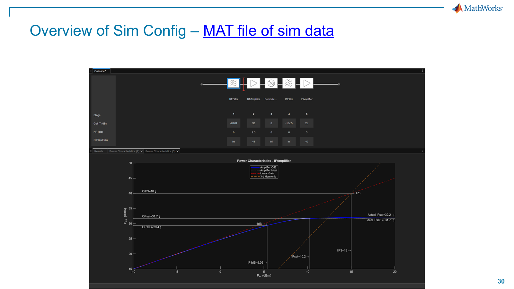
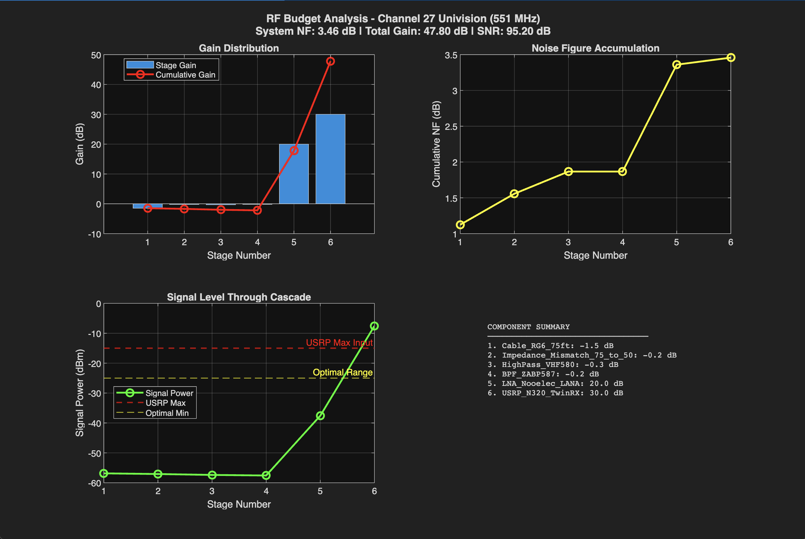
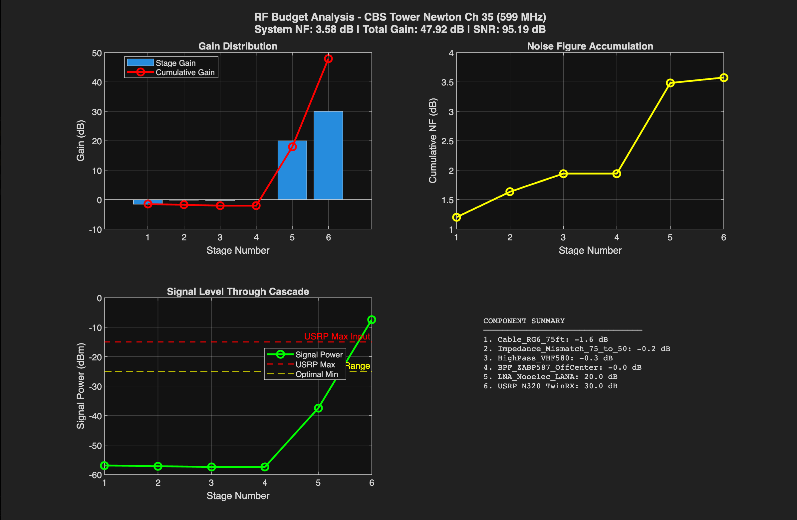
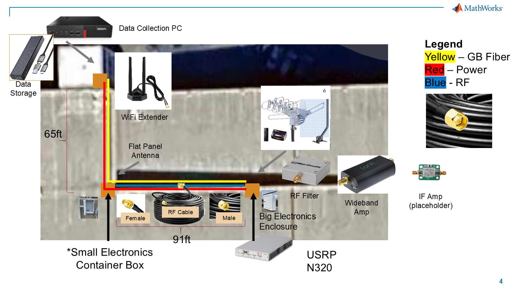
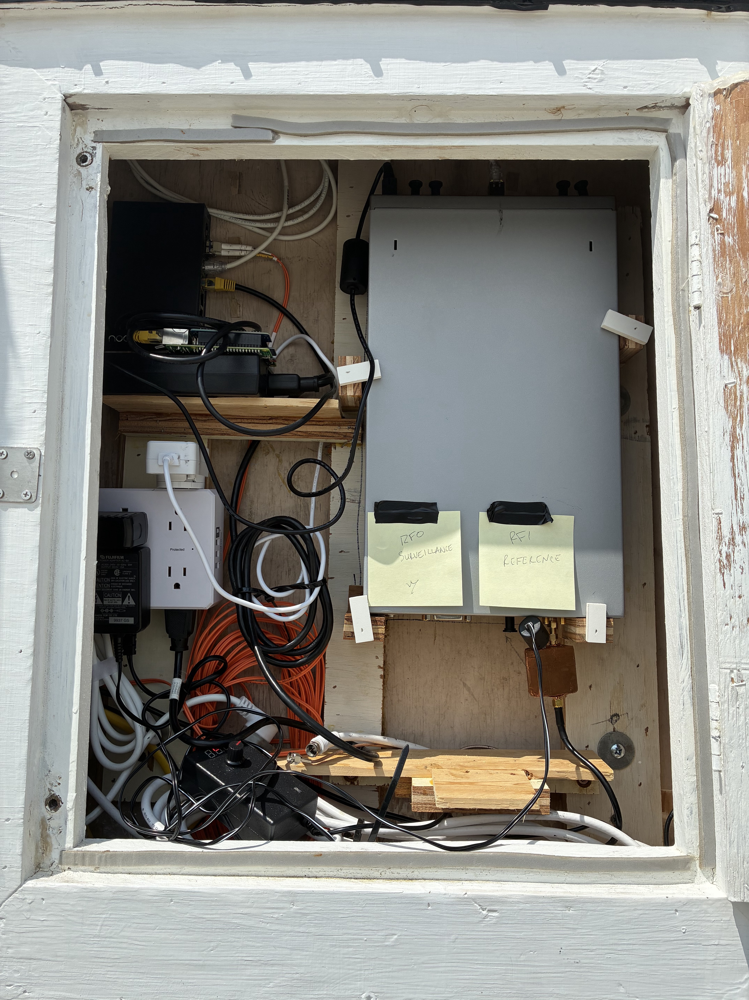
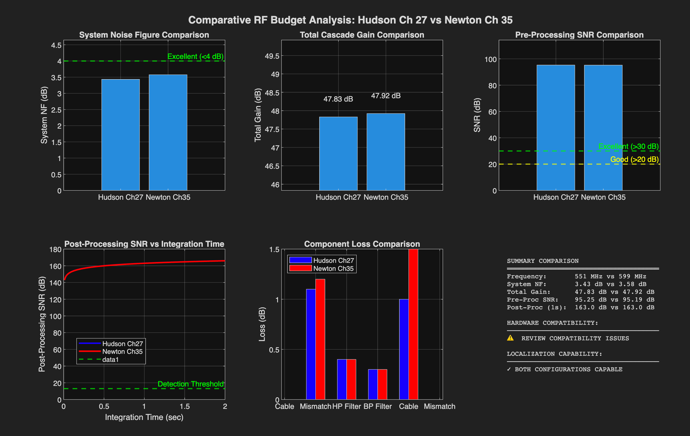
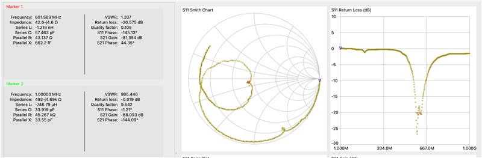

How predicted signal levels drove the receive-side RF design
A human-readable account of how historical link-budget outputs became antenna, cable, filter, amplifier, and N320 design questions—and why the resulting cascade still required measurement.
Executive answer: The team did not choose receive hardware from a generic television-parts list. Historical geometry work supplied candidate frequencies and expected direct-path levels, then an RF cascade made each loss, gain, and digitizer constraint visible. The model led to a directional antenna, explicit cable and 75-to-50 ohm transition assumptions, filtering, low-noise gain, and separate attention to N320 headroom. It did not qualify the installed receiver: measured levels, actual filter loss, impedance behavior, channel roles, lock, drops, and reference-path adequacy still require separate evidence.
1. Executive answer
The question
Given the historical HDTV signal cases, what must the receiver preserve, reject, amplify, and keep below the N320’s input limit?
Design input
Report 01A handed forward historical direct-path estimates of −28.8871 dBm for Newton and −39.8370 dBm for Hudson, plus the candidate bands and 6 MHz bandwidth. The later RF-budget scripts represent those cases at 599 MHz and 551 MHz. SRC-01B-10 · SRC-01B-02/03
Principal result
The cascade made passive loss, low-noise gain, and radio headroom one connected problem. The historical stage plots end near −7 dBm while marking −15 dBm as an earlier recommended/maximum line: a headroom warning, not an acceptance result. SRC-01B-01 · FIG-01B-01/02
Engineering decision
Design around a directional antenna, long-cable loss, deliberate impedance treatment, filtering, front-end LNA gain, and separately configured N320/reference attenuation—not a single “gain it up” rule.
Largest uncertainty
The later Newton cascade explicitly reuses a Hudson target-power placeholder. Neither this model nor the parts list proves the final installed chain or a qualified Reference Path.
The receive chain exists because the direct broadcast and the weak reflected signal create competing requirements. The hardware has to retain weak content while ensuring the strong path does not use up the radio’s usable input range.
RF Budget System Model
Before selecting later direct-sampling hardware, the original work used the RF Budget Analyzer to make the receiver stages, gains, noise figures, and stage outputs visible. This recovered view is the missing “what was simulated?” layer behind the budget outputs.

Figure 0 — Original RF Budget Analyzer system model.
Question
What system was modeled?
Result
The original app shows a complete stage-level receiver model: RF filter, RF amplifier, demodulator, IF filter, and IF amplifier, with per-stage gain, noise figure, and OIP3 fields visible above the selected-stage power chart.
Decision
Use a receiver-stage model as the basis for component selection and trade studies instead of selecting filters and amplifiers in isolation.
Boundary
This is an early historical IF/demodulator model, not the later 551/599 MHz direct-sampling N320 cascade and not evidence that the installed receiver behaves identically.
FIG-01B-00 · SRC-01B-11, slide 30
Why this distinction increases trust: the source records model evolution. The Analyzer view documents the initial stage-by-stage method; the later MATLAB scripts and Figures 1–2 use a direct-sampling Yagi → cable → impedance transition → filtering → LANA → N320 cascade. V2 shows both rather than merging them into an invented single configuration.
Historical signal assumptionsReport 01A candidate frequency, bandwidth, and predicted direct-path inputs.RF Budget ModelStages, gain, NF, loss, and power trade studies are made explicit.Designed architectureAntennas, RF chain, N320, PC/storage, and enclosure layout are planned.Installed hardwarePhysical enclosure and site equipment provide implementation context.Qualification questionsMeasure role, match, power, headroom, lock, drops, and Reference Path adequacy.
3. Key design constraints, in plain language
Directional antennaNeeded gain and a chosen look direction. Its gain and orientation are model inputs until measured in the installed geometry.75 ft cableConnects rooftop antenna and receiver, but its loss happens before the LNA and therefore matters to weak signals.75-to-50 Ω transitionTV-side cable and N320 input do not naturally match. The model assigns loss; review requires a deliberate architecture.FiltersLimit unwanted energy before gain. The candidate channels are not equally centered in the historical filter model.LANARestores margin after passive losses. It helps sensitivity, but it also raises the importance of downstream headroom.N320 TwinRXSets radio gain and digitizes the signal. Its input range must be checked with actual direct-path power, not only a cascade plot.
4. Test 1: Can a modeled HDTV signal survive the receive chain?
Result
The historical Hudson cascade reports 47.80 dB total gain and ends near −7 dBm; its plot marks −15 dBm as a radio maximum/recommended line.Why it matters: the same gain that helps a weak assumed signal can consume digitizer headroom.Conclusion: the cascade exposed a headroom question; it did not certify a safe field setting. FIG-01B-01
Engineering decision
Use a channel-specific cascade and treat N320 gain and reference attenuation as settings to verify, not defaults copied from a simulation.
Still unknown
Actual receiver input power, gain state, overload behavior, and signal quality at the installed antenna.

Figure 1 — Original Hudson cascade. This is the original MATLAB RF-budget output for the 551 MHz historical case. It asks whether the assumed weak signal can pass cable, mismatch, filtering, LNA, and radio gain without losing the signal or exceeding the modelled radio line. The visible end level near −7 dBm made input headroom a design concern. It led to the need for configurable gain/attenuation; it does not measure a real antenna, prove a safe N320 setting, or qualify a receiver path. FIG-01B-01 · SRC-01B-01 slide 8 · SRC-01B-02
1
Turn predicted signal cases into a cascade
Question
Can the historical candidate frequencies and assumed power levels pass through the proposed receive chain with enough margin?
Result
The original cascades make every modelled loss and gain visible. They also show that the resulting radio input needs a real headroom check, rather than a blanket “more gain is better” conclusion.
Why it matters
A passive receiver needs a stable reference/direct path and weak surveillance content at the same time. Cable loss, LNA gain, and radio gain couple those two needs.
Engineering decision
Carry the actual candidate frequency, bandwidth, and predicted-level cases into the cascade. Adjust or attenuate based on measured input—not only the chart.
Evidence
Original Hudson and Newton cascade plots plus the comparative plot. The code lists the elements and their assumed gains, losses, NF, and OIP3 values. SRC-01B-01/02/03/04
Method
MATLAB rfbudget cascades combine modelled elements with 6 MHz bandwidth, available input power, and candidate operating frequency.
Remaining uncertainty
The later Newton code explicitly reuses a Hudson target-power placeholder. Output charts are conditional model results, not measured receive-power, noise, or clipping evidence.
5. Test 2: What hardware was required to preserve weak echoes?
Result
The later model uses 12 dBi antenna gain, 75 ft RG-6, 0.4 dB modelled mismatch loss, filtering, 20 dB LANA gain, and 30 dB N320 gain.Why it matters: loss before the LNA permanently reduces weak-signal margin; gain after it can create an input-headroom problem.Conclusion: antenna, cable, filter, LNA, and radio were selected as one cascade. SRC-01B-02/03/04
Engineering decision
Budget pre-LNA loss explicitly; use directional gain and low-noise amplification; make the 75-to-50 ohm transition and N320 attenuation deliberate design items.
Still unknown
Actual cable, connectors, filter insertion loss, antenna orientation, impedance match, and installed gain configuration.

Figure 2 — Original Newton cascade. The 599 MHz counterpart shows the same component order under a different candidate frequency and loss assumptions. It answers which parts change with frequency: cable loss, estimated LNA NF, and off-center filter treatment. The result led to a separate filter/headroom check for each candidate case. The code labels its −67.37 dBm target input as a Hudson placeholder, so this is not a Newton-specific sensitivity validation. FIG-01B-02 · SRC-01B-01 slide 9 · SRC-01B-03
The filter discrepancy is evidence, not a nuisance to hide. The Newton script models the Mini-Circuits ZABP-587-S+ as 12 MHz off center and assigns 1.5 dB insertion loss. The supplied +25°C, 50-ohm S-parameter file instead reports S21 of −0.7335926 dB at 599 MHz (and −0.7928666 dB at 551 MHz). The model did not consume that S-parameter data. The decision was therefore “measure or model the real part,” not “choose whichever loss makes the cascade look better.” SRC-01B-03 · SRC-01B-05
Why a filter?
To reject unwanted energy before gain. The historical model used both high-pass and band-pass elements; their actual response must be measured in the proposed configuration.
Why an LNA?
To restore margin after long-cable and filter losses. Its stated 20 dB gain is a model input, not a field gain measurement.
Why separate reference control?
A strong broadcast path can be too large for the same gain plan used to preserve weaker content. The Newton analysis recommends a 20–30 dB variable reference attenuator.
Designed architecture: from model to planned hardware
The cascade specifies why the RF stages are needed. The mounting diagram shows how the team intended to put those stages into a collection system: antennas and RF cable outside, filters/amplification and an N320 in the electronics enclosure, then data collection, storage, and connectivity support.

Figure 3 — Original parking-lot designed architecture. This source slide is a planned collection layout, not a budget plot. It shows the flat-panel and rotating Yagi antennas, RF cable, filter, wideband amplifier, placeholder IF amplifier, N320, data-collection PC, storage, WiFi extender, and two enclosure locations. It answers what design the RF work led to: a physically distributed two-antenna receiver with RF conditioning before digitization and a collection workstation. The design embodied the decision to treat antenna placement, cable run, filtering, amplification, digitization, and data handling as one system. It does not show a transmitter, ADS-B, GPS, final channel roles, as-built connector sequence, gain settings, or a qualified collection. FIG-01B-07 · SRC-01B-12, slide 4
Model → architecture consequence: the RF budget did not merely produce gain numbers. It resulted in a planned hardware layout that placed the antenna/cable losses, RF conditioning, N320, storage, and data-collection workstation in a single collection design. The design still had to be built and measured.
Installed hardware context

Figure 4 — Physical receiver context, not an as-built cascade record. This photograph shows a dual-path receiver enclosure with RF0 Surveillance and RF1 Reference labels. It answers whether a physical dual-channel receiver existed to receive the design work. It records the implementation handoff from historical model to hardware/collection work. It does not identify every component or cable, prove roles, gains, lock, input power, or Reference Path adequacy. FIG-01B-04 · SRC-01B-07
Designed
Figure 3 is the planned system layout: components, enclosures, cable paths, computing, and storage.
Installed context
Figure 4 shows a physical enclosure with role labels. It does not prove the design was implemented exactly as modeled.
Still required
Report 02 owns the evidence that the path is built correctly, roles are verified, locks are stable, and the reference is adequate.
2
Protect weak signals without ignoring strong-path headroom
Question
Which receive components and interfaces were needed to retain a weak assumed echo while controlling the stronger broadcast path?
Result
The later model combines a 12 dBi Yagi, long 75-ohm cable, modeled mismatch, filtering, 20 dB LANA gain, and N320 gain. It identifies passive loss before the LNA and headroom after it as coupled constraints.
Why it matters
Every cable, mismatch, or filter loss before the LNA reduces weak-signal margin. Every later gain increase can push the N320 toward an unsafe or non-optimal input condition.
Engineering decision
Model and then measure the complete front end: antenna, cable, impedance transition, filter, LNA, and radio. Give the reference path a separately checked attenuation plan.
Evidence
The original cascades, comparative analysis, vendor filter S2P data, parts-list context, mounting design, and receiver photograph show the reasoning and its physical handoff. SRC-01B-01/02/03/04/05/06/07/12
Method
Compare 551 MHz and 599 MHz assumptions element by element, then cross-check the simplified filter model against supplied machine-readable S-parameter data.
Remaining uncertainty
The sources do not prove the installed component sequence, antenna orientation, cable type/length, connector treatment, actual filter loss, or the chain’s measured noise and headroom.
6. Test 3: What did expert review change?
Result
The recorded review calls for antenna inclusion, transmission-line cable modeling, a deliberate 50-ohm strategy or transformer, filter S-parameters, noise/MDS calculations, and a rough receive-power estimate that could vary by about ±10 dB with orientation.Why it matters: these are precisely the assumptions that can hide weak-signal loss or ADC overload in a desktop cascade.Conclusion: the review turned implicit assumptions into a measurement and model-closure checklist. SRC-01B-01 slides 11–12
Engineering decision
Do not treat impedance, cable, filter, noise, or direct-path power as invisible details. Measure or model them before relying on the cascade for hardware choices.
Still unknown
No recovered evidence proves that every review request was implemented or that the complete installed chain passed end-to-end qualification.
3
Use expert review as a design-control list
Question
Which missing assumptions could change the hardware conclusion enough to require a design revision or measurement?
Result
The review highlighted the interface between idealized element models and the real chain: antenna direction, cable transmission-line behavior, impedance, filter S-parameters, noise power, MDS, and rough rooftop receive level.
Why it matters
Each item changes the actual signal or noise presented to the LNA and N320. A good looking cascade is not meaningful if its antenna, cable, or filter inputs are wrong.
Engineering decision
Keep the review requirements visible in RF-design follow-up: deliberately choose the impedance approach, integrate vendor data, calculate noise/MDS, and verify actual levels and headroom.
Evidence
The RF-budget deck preserves Tim Reeves’ review text. The supplied S2P data and the unlabelled return-loss screenshot give independent context for why match and filter behavior must be measured. SRC-01B-01/05/08
Method
Read the review against the actual code and supplier file. Where they disagree or an element remains simplified, retain the discrepancy rather than converting it into a pass.
Remaining uncertainty
The available return-loss screenshot is not labelled with the test article or chain configuration. It supports “some bench work occurred,” not a claim about the installed Reference or Surveillance path.
7. Design comparison and resulting decisions
Executive decision summary — what the historical RF analysis changed
Question
Result
Decision
Uncertainty
What signal cases should the hardware accommodate?
551 MHz Hudson and 599 MHz Newton, both 6 MHz, with historical direct-path inputs from Report 01A. SRC-01B-10
Build candidate-specific cascades rather than choose generic television hardware.
Current transmitter configuration and measured input power are not verified here.
How can weak assumed echoes survive?
The model allocates directional gain and low-noise gain while carrying cable, mismatch, and filter loss explicitly. SRC-01B-02/03/04
Put passive losses and impedance treatment into the design; use an LNA before radio gain becomes the only sensitivity lever.
Exact as-built component order and loss are unknown.
Will the same filter treatment fit both frequencies?
The Newton model assumes 1.5 dB off-center loss; supplied S2P data reports −0.7335926 dB S21 at 599 MHz. SRC-01B-03/05
Measure actual filter insertion loss or select an appropriate alternative; do not call the model assumption verified.
Neither source documents a VNA-derived installed filter result.
How should the radio be protected?
Historical signal plots end near −7 dBm while showing a −15 dBm radio line; Newton code recommends 20–30 dB variable reference attenuation. SRC-01B-01/03/04
Configure reference and surveillance gain/headroom separately and verify at the radio input.
No installed attenuator or overload measurement is documented.
What changed because of this analysis?
Decision record — result to action, without turning the model into qualification
Engineering Question
Evidence Result
Decision Made
Still Unknown
Weak signal preservation
Weak paths require explicit gain budgeting; cable, mismatch, and filter loss occur before low-noise gain. SRC-01B-02/03/04 · FIG-01B-01/02
Include an LNA and account for passive losses in the RF budget.
Installed weak-signal margin.
Impedance strategy
75-ohm cable/antenna assumptions and a 50-ohm N320 interface interact; the model used a 0.4 dB transition and review required a deliberate architecture. SRC-01B-04 · SRC-01B-01 slides 11–12
Treat the transition as a deliberate design element, not an invisible adapter.
Installed mismatch behavior.
Filter behavior
The 599 MHz model loss differs from supplied vendor S-parameter data. SRC-01B-03 · SRC-01B-05
Measure actual filter response before treating the modelled insertion loss as final.
Installed insertion loss.
Radio headroom
Historical cascades approach their plotted radio threshold and the Newton code recommends separate reference attenuation. SRC-01B-01/03/04 · FIG-01B-01/02
Treat attenuation and gain separately for reference and surveillance paths.
Actual receive power and overload margin.
Explicit decision record: the evidence supports a historical RF-design direction, not an installed-chain approval. The model led to explicit weak-signal gain budgeting, deliberate impedance treatment, filter-response measurement, and separately checked radio headroom. It does not support a claim that the field receiver met those requirements.
8. Original RF-budget figures
Read the historical charts as design evidence, not a current performance verdict. The comparative figure contains historical “detection” and “localization” labels. This report preserves the original figure because it documents what was compared, but it does not carry those labels forward as claims. The Newton case also has an explicitly acknowledged target-power placeholder.

Figure 5 — Original comparative RF-budget analysis. This original six-panel figure compares the two historical cascades: system noise figure, total gain, calculated pre/post-processing SNR, and component loss. It asks whether the same conceptual hardware stack responds similarly across the two candidate bands. The material result is that the team compared component-level differences—including higher assumed Newton cable and filter loss—rather than only transmitter power. That result led to the request for actual filter and headroom checks. It does not prove live detection, localization, or installed hardware compatibility. FIG-01B-03 · SRC-01B-01 slide 10 · SRC-01B-04

Figure 6 — Bench match context near 599 MHz. This preserved screenshot shows a return-loss/Smith-chart measurement marker at 601.589 MHz, with displayed VSWR 1.207 and return loss −20.575 dB. It answers only whether some impedance bench work was recorded near the Newton case. The result reinforces the review’s requirement to measure matching. The screenshot is not labelled with a test article, path, calibration, or date, so it does not prove the installed antenna, cable, filter, Reference Path, or Surveillance Path was qualified. FIG-01B-05 · SRC-01B-08
9. What the analysis did not prove
Keep the evidence in its lane. Historical direct-path and weak-target values were design inputs. Cascade gain/noise outputs were model outputs. Supplier S-parameters were component evidence. The mounting diagram was planned architecture. A hardware photograph and a bench screenshot were physical context. None of these alone establishes the installed RF path, current channel, lock state, clipping margin, reference quality, collection suitability, aircraft detection, tracking, or localization.
Not a final BOM
A parts list, a model, and a mounting diagram do not prove purchase, installation, orientation, connector sequence, or calibration.
Not an RF acceptance test
The available evidence does not measure end-to-end gain, noise figure, headroom, or overload in the installed configuration.
Not a detector claim
Historical SNR and post-processing labels do not establish field Pd/Pfa, detection, tracking, or localization.
10. How this connects to hardware and collection
Report 01B ends where the design turns physical. The next report, 02_HardwareAndCollection_V4.html, owns the actual receiver, antennas, site installation, capture roles, and evidence needed to qualify a collection. The historical RF budget supplies questions that report must answer with measurement: